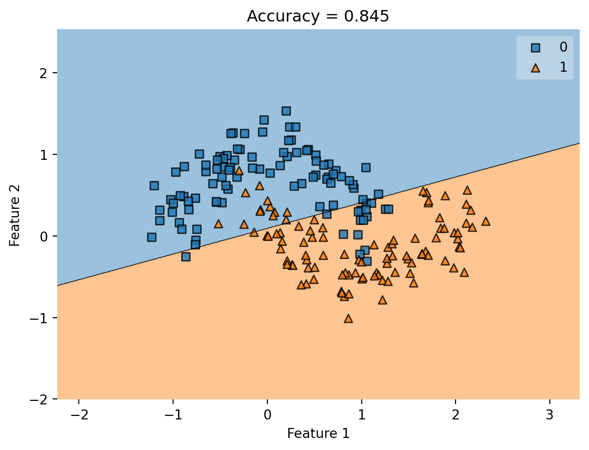
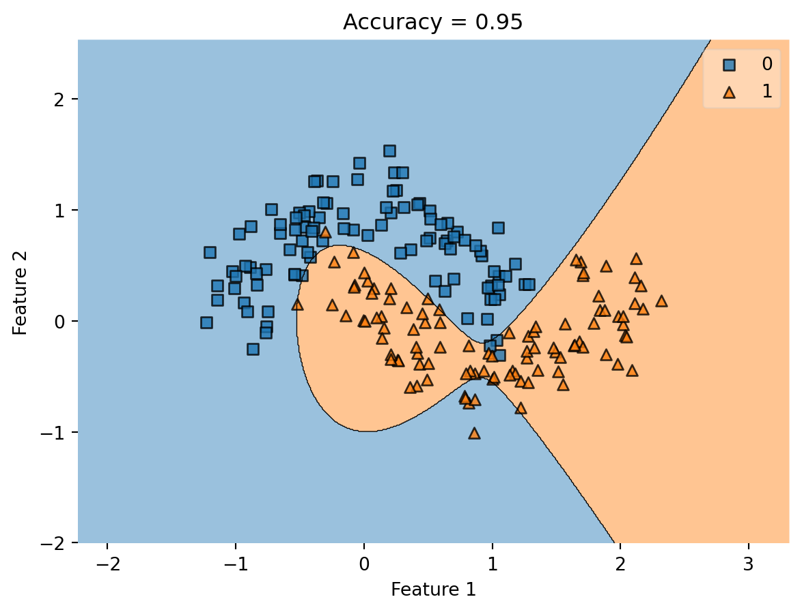
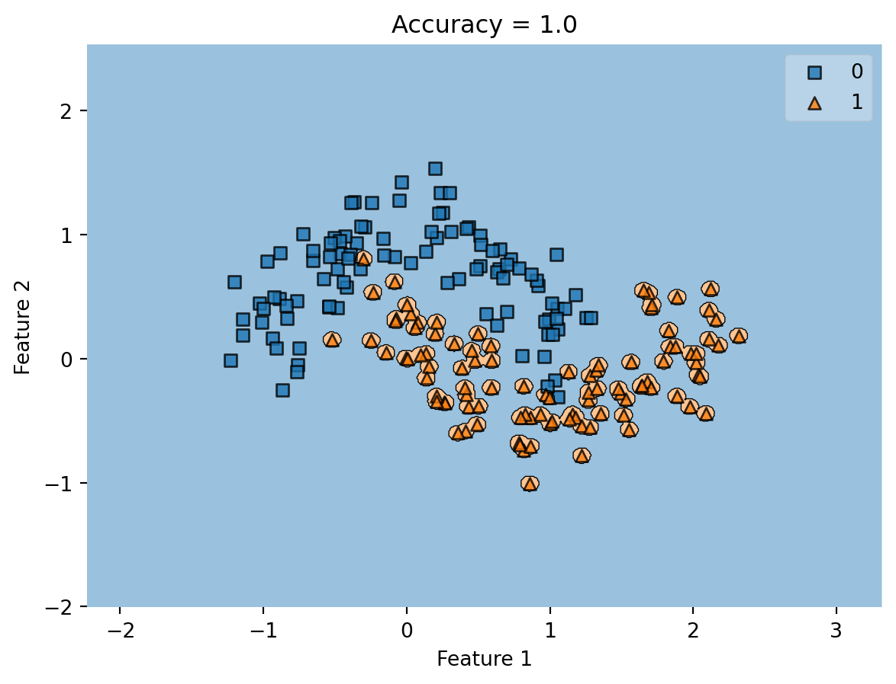
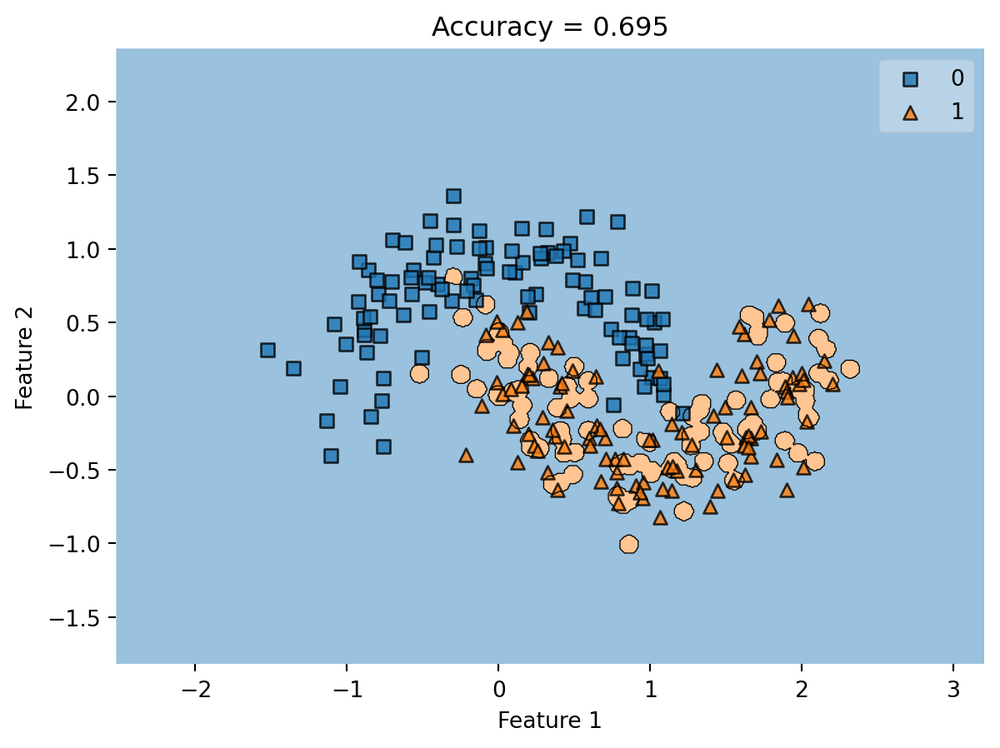

from sklearn.datasets import make_moons, make_circles
from matplotlib import pyplot as plt
import numpy as np
np.seterr(all="ignore")
X, y = make_moons(200, shuffle = True, noise = 0.2)
plt.scatter(X[:,0], X[:,1], c = y)
labels = plt.gca().set(xlabel = "Feature 1", ylabel = "Feature 2")Kernel Logistic Regression
In this blog post, you’ll implement kernel logistic regression, a method for using linear empirical risk minimization to learn nonlinear decision boundaries.
$$
$$
This is one of two suggested options for a blog post this week. You might want to pick this option if some of the following bullet points describe you:
- You enjoy working with matrices and vectors in
numpy. - You like math and theoretical aspects of machine learning algorithms.
- You are willing to read a little extra theory before starting on your blog post.
The alternative has a more applied flavor.
1 Introduction
In this blog post you’ll implement and test kernel logistic regression for binary classification. Kernel logistic regression is one of many kernelized linear classifiers.
In regular logistic regression, we aim to solve the empirical risk minimization problem
\[ \hat{\mathbf{w}} = \mathop{\mathrm{arg\,min}}_{\mathbf{w}} \; L(\mathbf{w})\;, \] where \[ L(\mathbf{w}) = \frac{1}{n} \sum_{i = 1}^n \ell(\langle \mathbf{w}, \mathbf{x}_i \rangle, y_i)\; \] is the empirical risk and \[ \ell(\hat{y}, y) = -y \log \sigma(\hat{y}) - (1-y)\log (1-\sigma(\hat{y}))\;, \] is the logistic loss. Logistic regression is an outstanding algorithm for linear classification, but it can only handle linear decision boundaries. Here’s an example of a data set that has a clear nonlinear pattern that we’d like to learn:
Follow the instructions here to install the
mlxtend package.A linear separator wouldn’t do great on this data set. To see the best we can do, let’s use pre-implemented versions of logistic regression and a visualization tool:
from sklearn.linear_model import LogisticRegression
from mlxtend.plotting import plot_decision_regions
LR = LogisticRegression()
LR.fit(X, y)
plot_decision_regions(X, y, clf = LR)
title = plt.gca().set(title = f"Accuracy = {(LR.predict(X) == y).mean()}",
xlabel = "Feature 1",
ylabel = "Feature 2")
Our classifier does better than random chance, but it looks like we could do significantly better if we were able to learn the “curvy shape” of the data. Here’s an example using kernel logistic regression, which you will implement in this assignment.
from solutions.kernel_logistic import KernelLogisticRegression
from sklearn.metrics.pairwise import rbf_kernel
KLR = KernelLogisticRegression(rbf_kernel, gamma = .1)
KLR.fit(X, y)
plot_decision_regions(X, y, clf = KLR)
title = plt.gca().set(title = f"Accuracy = {(KLR.predict(X) == y).mean()}",
xlabel = "Feature 1",
ylabel = "Feature 2")
1.1 Kernel Logistic Regression
In the kernel logistic regression problem, we instead solve empirical risk minimization with modified features. The empirical risk is now
\[ L_k(\mathbf{v}) = \frac{1}{n} \sum_{i = 1}^n \ell(\langle \mathbf{v}, \boldsymbol{\kappa}(\mathbf{x}_i) \rangle, y_i)\;, \tag{1}\]
where \(\mathbf{v}\in \mathbb{R}^n\) (not \(\mathbb{R}^p\)). The modified feature vector \(\boldsymbol{\kappa}(\mathbf{x}_i)\) has entries
\[ \boldsymbol{\kappa}(\mathbf{x}_i) = \left( \begin{matrix} k(\mathbf{x}_1, \mathbf{x}_i) \\ k(\mathbf{x}_2, \mathbf{x}_i) \\ \vdots \\ k(\mathbf{x}_n, \mathbf{x}_i) \end{matrix}\right)\;. \]
Here, \(k:\mathbb{R}^2 \rightarrow \mathbb{R}\) is the kernel function. Kernel functions need to satisfy some special mathematical properties. We’re not going to code them up; instead we’re going to use some built-in functions from scikit-learn to handle the kernel functions for us.
Once the model has been trained and an optimal \(\hat{\mathbf{v}}\) has been obtained, one can then make a prediction using the formula
\[ \hat{y} = \langle \hat{\mathbf{v}}, \boldsymbol{\kappa}(\mathbf{x}) \rangle\;. \]
If it is desired to return a 0-1 label instead of a real number, one can return \(\mathbb{1}[\hat{y} > 0]\).
2 What You Should Do
2.1 Implement Kernel Logistic Regression
Implement a Python class called KernelLogisticRegression. You’ll be able to use it like the example in the previous section. Your class should implement the following methods:
If you’re not sure how to use
**kwargs in Python functions and methods, you might want to check this resource.__init__(self, kernel, **kernel_kwargs)should accept akernelfunction and a set of named keyword arguments calledkernel_kwargs. All the__init__()method should do is to save these items as instance variables calledself.kernelself.kernel_kwargs
fit(self, X, y)will again be the method that learns the optimal parameters \(\hat{v}\). The fit method is going to look a little different this time:- First,
padXto make sure thatXcontains a column of1s. Here’s a function to do this:
def pad(X): return np.append(X, np.ones((X.shape[0], 1)), 1)- Save
Xas an instance variable calledself.X_train. - Compute the kernel matrix of
Xwith itself. If you implemented__init__()correct, this can be done with the call
km = self.kernel(X_, X_, **self.kernel_kwargs)- Minimize the empirical risk Equation 1. You might find it useful to define a separate function for computing the empirical risk. Note that the predictor is still an inner product, just with a different parameter vector \(\mathbf{v}\) and a different matrix column \(\boldsymbol{\kappa}(\mathbf{x}_i)\). This means that, if you’re careful, you can compute the entire empirical risk using just one matrix multiplication!
- However you find it, save the resulting optimal value of \(\mathbf{v}\) as
self.v. - You should still use the logistic loss for \(\ell\).
- You will probably need to choose a random initial \(\mathbf{v}\). Don’t forget that \(\mathbf{v}\) should have length equal to the number of data points, not the number of features.
- However you find it, save the resulting optimal value of \(\mathbf{v}\) as
- If you’ve already implemented gradient descent for logistic regression in this blog post, then it’s not too hard to adapt your method to kernel logistic regression. However, it’s also fine to use the function
scipy.optimize.minimize()as demonstrated in this lecture.
- First,
predict(self, X)should accept a new feature matrix and return binary labels \(\{0,1\}\). For each row of \(\mathbf{X}\), the prediction is obtained using the formula \(\mathbb{1}[\langle \hat{\mathbf{v}}, \boldsymbol{\kappa}(\mathbf{x}) \rangle]\). To do this:- Compute the kernel matrix between
self.X_trainand the new feature inputX. Each column of this matrix is \(\boldsymbol{\kappa}(\mathbf{x}_j)\) for some \(j\). - Compute inner products of the form \(\langle \mathbf{v}, \boldsymbol{\kappa}(\mathbf{x}_j) \rangle\). If the user supplies a matrix
Xwith multiple columns, you should be able to compute all the predictions at once. This can be done efficiently using matrix multiplication. - Finally, return a binary vector \(\hat{\mathbf{y}}\) whose \(j\)th entry is \(\hat{y}_j = \mathbb{1}[\langle \mathbf{v}, \mathbf{x}_j \rangle > 0]\).
- Compute the kernel matrix between
score(self, X, y)computes the accuracy of the model predictions on the feature matrixXwith labelsy.
You can assume that the user will always only call predict and score after calling fit. If you’d like, you’re welcome to add warnings or handle other cases in which the user may be less cooperative and attempt to call one of those methods first.
My complete implementation of kernel logistic regression was about 50 lines of code, excluding comments.
Docstrings are not expected for this blog post.
2.2 Experiments
Basic Check
Once you’re done, you’ll be able to import and and use your function like this.
from kernel_logistic import KernelLogisticRegression # your source code
from sklearn.metrics.pairwise import rbf_kernel
from sklearn.datasets import make_moons, make_circles
X, y = make_moons(200, shuffle = True, noise = 0.2)
KLR = KernelLogisticRegression(rbf_kernel, gamma = .1)
KLR.fit(X, y)
print(KLR.score(X, y))Here, the rbf_kernel is the kernel function and gamma is a parameter to that kernel function that says how “wiggly” the decision boundary should be. Larger gamma means a more wiggly decision boundary.
Your implementation is likely correct when you can generate new synthetic versions of the data set above (just call make_moons again) and achieve accuracy consistently at or above 90%. To check that, you can just run the code block above a few times.
Choosing gamma
When we choose a very large value of gamma, we can achieve a very wiggly decision boundary with very good accuracy on the training data. For example:
KLR = KernelLogisticRegression(rbf_kernel, gamma = 10000)
KLR.fit(X, y)
print(KLR.score(X, y))
plot_decision_regions(X, y, clf = KLR)
t = title = plt.gca().set(title = f"Accuracy = {KLR.score(X, y)}",
xlabel = "Feature 1",
ylabel = "Feature 2")1.0
Here, our classifier draws a little orange blob around each orange data point: points very nearby are classified as orange while other points are classified as blue. This is sufficient to achieve 100% accuracy on the training data. But this doesn’t generalize: generate some new data and we’ll see much worse performance:
# new data with the same rough pattern
X, y = make_moons(200, shuffle = True, noise = 0.2)
plot_decision_regions(X, y, clf = KLR)
title = plt.gca().set(title = f"Accuracy = {KLR.score(X, y)}",
xlabel = "Feature 1",
ylabel = "Feature 2")
Whoops! Not so good. We say that the validation or testing accuracy of the classifier is quite low. Cases in which the validation accuracy is low even though the training accuracy is high are classic instances of overfitting.
Design an experiment in which you fit your model for several different values of gamma. Show accuracy on both training data (the data on which the model was fit) and testing data (data generated from the same settings but which the model has never seen before). Please show your findings in the form of an attractive visualization with clear labels and a clear message.
My suggestion is to choose
gamma in 10**np.arange(-5, 6)Vary the Noise
Repeat your experiment with at least two other values of the noise parameter to make_moons. The noise determines how spread out the two crescents of points are. Do your findings suggest that the best value of gamma depends much on the amount of noise?
Try Other Problem Geometries
Use the make_circles function to generate some concentric circles instead of crescents. Show a few examples with varying amounts of noise. Can you find some values of gamma that look like they lead to good learning performance for this data set? Here’s an example of a fairly successful classifier: both the points and the accuracy are computed on unseen test data.
0.962.3 Blog Post
Your blog post should describe your approach to your code and written descriptions of your experiments.
- Please include a walk-through for your user of how you computed the empirical loss.
- Please make sure that your figures are appropriately labeled and described.
- Please make sure to include a link to the GitHub page containing your source code at the very beginning of the blog post.
In case you’re curious, it’s possible to add formal captions to your figures in Quarto. This makes things look a little fancier, but is not required!
Once you’re happy with how things look, render your blog, push it to GitHub, and submit a link to the URL of your blog post on Canvas.
© Phil Chodrow, 2023